Tsav - Chabbat Hagadol 5786
Le Feu de Pessah
Le Feu Préparatoire
La période préparatoire à la fête de Pessah, est traditionnellement marquée par la lecture de la section biblique de Tsav et le discours du Chabbat HaGadol, le Grand Shabbat précédant Pessah. La convergence temporelle entre ces éléments liturgiques et l'imminence de la fête n'est nullement fortuite, et révèle une synchronicité profonde entre les commandements relatifs au feu de l'autel (Ech Tamid) et le processus méticuleux d'éradication du levain.
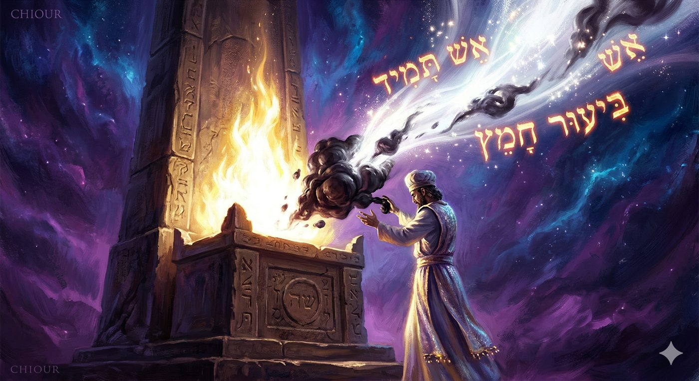
Dans la tradition mystique, le temps n'est pas conçu comme une ligne droite et uniforme, mais comme une spirale ascendante où chaque époque de l'année détient une lumière spirituelle spécifique. Le mois de Nissan, défini comme le premier des mois, est le réceptacle des énergies de libération, de miracles et de refondation de l'identité de l'homme libre. La préparation à Pessah exige par conséquent bien plus qu'un simple nettoyage matériel des foyers. Elle requiert une introspection radicale, une chirurgie de l'âme visant à extirper les racines de l'arrogance, de la complaisance et de l'illusion d'autonomie qui enchaînent l'esprit humain à sa propre finitude.
L'objet de cette étude est d'examiner avec l’aide du Ciel et de nos Maîtres, les corrélations ontologiques, psychologiques et mystique entre les thèmes de la parashat Tsav et la préparation à Pessah. En s'appuyant sur les textes fondamentaux de la mystique juive et de la philosophie hassidique, notamment les enseignements du Ari z"l (Rabbi Isaac Louria), du Bné Issakhar, du Mégalé Amoukot, ainsi que les œuvres magistrales de Rabbi Yaakov Yossef de Polonne, Ukraine (Toldot Yaakov Yossef et Ben Porat Yossef), du Likoutei Torah, et les commentaires du Maharal de Prague, cette analyse décryptera comment la préparation matérielle à Pessah constitue le miroir d'une transmutation métaphysique rigoureuse.
Il s'agira de démontrer que l'élimination du Hametz n'est pas une simple exigence rituelle ou mémorielle, mais une purge spirituelle de l'ego, alimentée par le feu inextinguible de l'autel intérieur de l'homme, et que cette dynamique conditionne l'aptitude même à recevoir la révélation divine symbolisée par la Matsa. La réflexion s'articulera autour de la nature de l'impératif divin de Tsav, de la physiologie mystique de l'orgueil, de l’impérieuse nécessité de former un collectif unie, et de la mécanique mystique de l'annulation des forces de l'impureté.
Le Feu des zélés
Le Feu de l'Action et de l’urgence
La section biblique s'ouvre sur les mots : « Tsav à Aaron et à ses fils, en disant : Voici la loi de l'holocauste (Olah)... » (Lévitique 6:2). Le terme Tsav (Ordonne), employé ici contrairement au terme plus habituel de Daber (Parle) ou doux de Emor (Dis), fait l'objet d'une attention particulière. Ce changement indique une injonction exigeant un empressement immédiat (Zrizout) et s'appliquant avec la même intensité tant pour le présent que pour les générations futures.
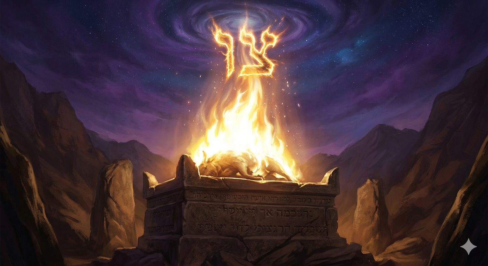
Dans la perspective classique, cette formulation spécifique et autoritaire s'adresse à Aaron et à ses fils car elle concerne directement la mécanique des sacrifices, un domaine d'action exclusif à la prêtrise qui pourrait engendrer une certaine lassitude ou une perte matérielle pour les prêtres, nécessitant ainsi un encouragement vigoureux selon l'exégèse d'Isaac Abarbanel. Le korban Ola (l'holocauste) est mentionné en premier en sa qualité d'offrande la plus choisie, celle qui est entièrement consumée pour le Divin, sans aucune part laissée au prêtre ou au donateur, incarnant ainsi la pureté absolue de l'intention, comme le précise Abarbanel (d’autres sacrifices permettent en effet au Cohen ou au donateur de consommer une partie du sacrifice).
Cependant, la mystique juive transpose cette restriction sacerdotale à une dimension universelle de la conscience humaine. L'ouvrage Ben Porat Yossef s'interroge sur la raison métaphysique pour laquelle cette injonction pressante (Tsav) est spécifiquement liée à l'holocauste (Ola) et au feu de l'autel, par opposition aux autres catégories de sacrifices. La réponse réside dans la nature même du feu et de la psychée humaine. Le feu tend naturellement à s'élever et à consumer, mais il nécessite paradoxalement une vigilance constante et un apport régulier en combustible pour ne pas s'éteindre sous le poids de la matérialité ambiante ou des intempéries. L'enthousiasme spirituel de l'homme est identiquement précaire. La Zrizout (l’empressement, le zèle) est l'antidote direct à la Atslout (la paresse ou l'inertie spirituelle).
En préparation à Pessah, la qualité de Zirouz est indispensable, car le processus de fermentation (qui transforme une pâte pure en Hametz) est précisément fonction du temps et de la passivité. Laisser la pâte reposer (plus de 18 minutes), c'est lui permettre de s'enfler par elle-même, de développer une illusion de grandeur, et de devenir Hametz. L'injonction Tsav vient donc briser la temporalité de l'inertie, imposant un dynamisme qui empêche la formation du levain psychologique.
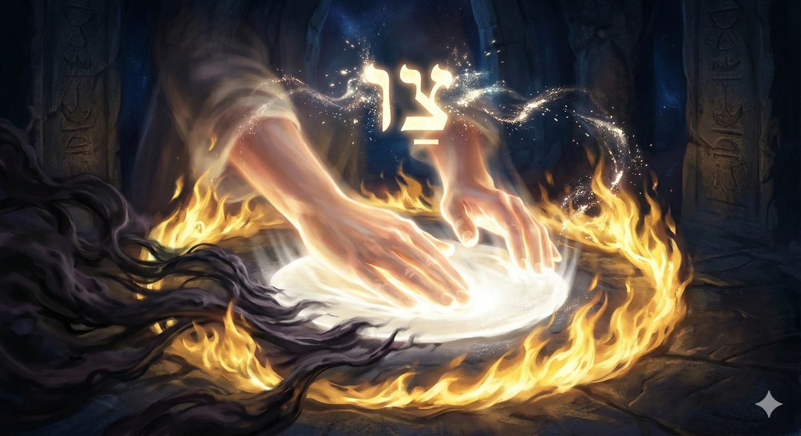
Garder la Flamme du Leadership
Cette injonction de vigilance s'applique avec une acuité particulière à ceux qui détiennent une autorité. Le concept de leadership et de gouvernance divine fait intrinsèquement partie de l'analyse du Maharal de Prague. Toute forme de pouvoir ou d'autorité ne doit absolument pas être utilisée pour le bénéfice personnel du dirigeant ou pour asseoir sa suprématie mondaine. Toute présidence dans le monde détient une étincelle de sainteté car elle est octroyée directement par le Créateur et découle de Sa grandeur suprême. Un roi en Israël révèle la gloire divine qui a été "partagée avec ceux qui Le craignent", tandis que les monarques des autres nations reçoivent un honneur octroyé à "la chair et au sang", tel que l'enseigne le Maharal.
Toute autorité qui succombe au syndrome du Hametz, c'est-à-dire l'inflation de la propre importance du dirigeant, la recherche effrénée de son profit personnel et l'assouvissement de ses désirs de domination, détruit le fondement même de son élection. C'est pourquoi la parasha de Tsav s'adresse spécifiquement à Aaron et à ses fils, les chefs spirituels de la nation. Le message est impératif : le grand prêtre, qui se trouve au sommet de la pyramide sociétale et religieuse, doit être le gardien vigilant et incorruptible du feu perpétuel de l'humilité. Il doit d’ailleurs chaque matin enlever les cendres (Troumat HaDéchen), un acte d'une extrême modestie pour un homme de son rang, souligne Abarbanel, pour nourrir la flamme divine et s'assurer que l'orgueil ne corrompe le service communautaire.
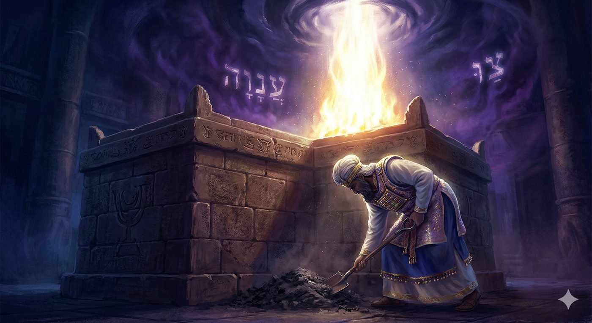
Le parallèle est d'ailleurs tracé avec la transmission de cette royauté et de cette autorité spirituelle à Yeoshoua, le successeur de Moché Rabenou. Le Mégalé Amoukot fait remarquer que Moché Rabenou a reçu l'ordre d'ordonner à Yeoshoua « Tsav et Yehoshua » avec la double injonction de le fortifier "Hazkéhou" et de l'encourager "Ametzéhou"1. Ces termes ne sont pas de simples synonymes d'encouragement. Ils correspondent mystiquement aux attributs divins (Middot) de la Bonté originelle (Hessed) et de la Vérité (Emet, jaillissant de la terre). Le dirigeant d'Israël, investi de l'énergie du Tsav, doit fusionner ces énergies pour guider la nation vers la terre d'Israël, sans jamais se laisser polluer par le levain de l'ego politique.
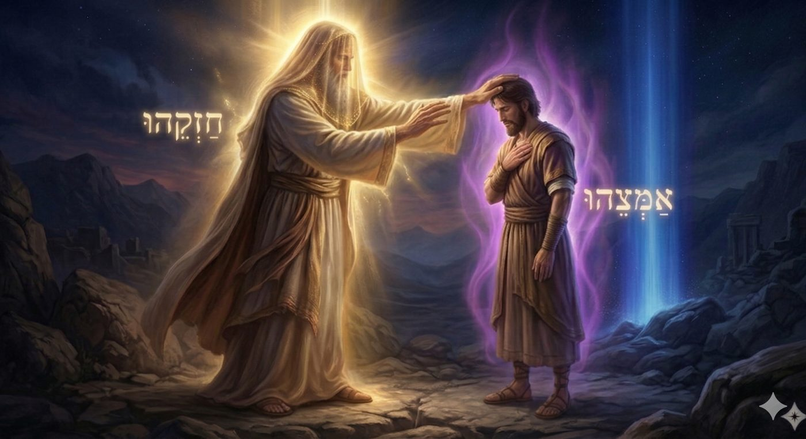
Le Feu Perpétuel
Le verset central de cette section stipule : « Un feu perpétuel brûlera sur l'autel, il ne s'éteindra point » Ech tamid toukad al hamizbéah lo tikhbé, Vayikra 6:6. Si la dimension physique de ce commandement rythmait le service quotidien du Temple de Jérusalem, la disparition de ce dernier a nécessité un transfert vers l'intériorité humaine.
L'Intériorisation du Foyer Sacré
Le traité Toldot Yaakov Yossef, œuvre fondatrice de la pensée hassidique, opère une intériorisation radicale et structurelle de ce précepte. Il pose le postulat que chaque individu est porteur d'un autel intérieur au sein de son cœur, et que l'attente active de la rédemption (Géoula) exige le maintien d'un feu brûlant dans l'intériorité la plus intime de l'être.
Ce feu symbolise la ferveur spirituelle, la passion inextinguible (qu’on ne peut pas éteindre) pour le divin, la conscience aiguë de la tragédie de l'exil (Galout) et le refus catégorique de s'accommoder de la réalité fragmentée et profane du monde matériel. Jusqu'au temps de la délivrance ultime et de la révélation messianique, l'individu doit veiller avec une rigueur implacable à ce que le feu de l'autel brûle en son sein, consumant toute complaisance et toute satisfaction illusoire, poursuit ce même ouvrage.
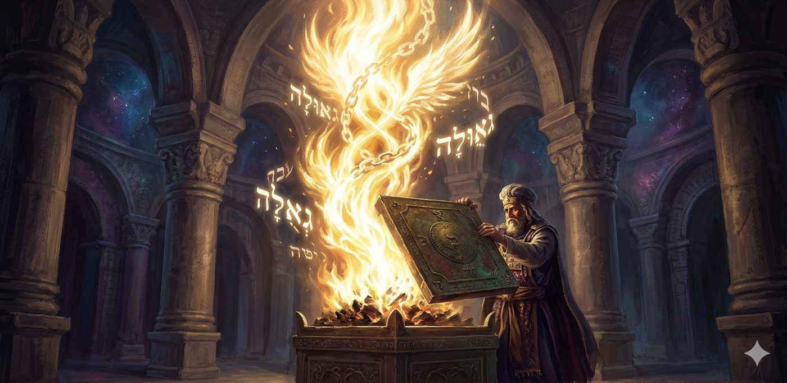
Le Sfat Emet vient couronner cette approche spirituelle en enseignant que ce commandement résonne aussi comme une promesse divine : il existe au plus profond du cœur de chaque Juif une nekouda, un point d'enthousiasme latent pour D.ieu, une étincelle sacrée de ce feu intérieur qui ne pourra jamais être éteinte.
C'est précisément ce feu intérieur, sévère et exigeant, qui permet à l'homme de ne pas sombrer dans une joie superficielle, matérielle et profane, mais de cultiver une ferveur authentique axée sur la présence de D.ieu. Selon le Talmud (Berah’ot 31a), il est interdit à l'homme de remplir sa bouche d'un rire total dans ce monde-ci, car la plénitude de la joie est réservée à l'ère messianique (« Alors notre bouche s'emplira de rire », Psaumes 126:2).
Toutefois, cette injonction à la gravité ne doit pas sombrer dans la mélancolie, qui est perçue comme la lie de l'âme humaine. L'idéal est une joie profonde, ancrée dans le service divin (« Servez l'Éternel avec joie », Psaumes 100:2), qui naît de la combustion des impuretés par le feu de l'autel intérieur, explique le Toldot Yaakov Yossef. Le feu de l'autel purifie la joie de ses scories narcissiques.
La Préservation de la Flamme à Travers les Exils
La dimension perpétuelle ("Tamid") de ce feu est également explorée dans son application historique à travers les commentaires bibliques. Le Yerouchalmi (Yoma, 21b) s'interroge : Comment ce feu pouvait-il demeurer perpétuel lors des pérégrinations constantes du peuple d'Israël dans le désert, lorsque l'autel devait être démonté et transporté?
Rabbi Yehouda considère que ce feu continuait effectivement de brûler même lors des déplacements physiques, et était méticuleusement préservé sous une couverture spéciale nommée Psachter, un grand récipient de bronze utilisé pour recouvrir les braises et empêcher qu'elles ne s'éteignent ou ne provoquent un incendie durant le voyage2. Rabbi Shimon, en revanche, propose une lecture différente selon laquelle le terme "Tamid" (perpétuel) ne s'appliquait qu'aux périodes où le Mishkan était dressé et statique.
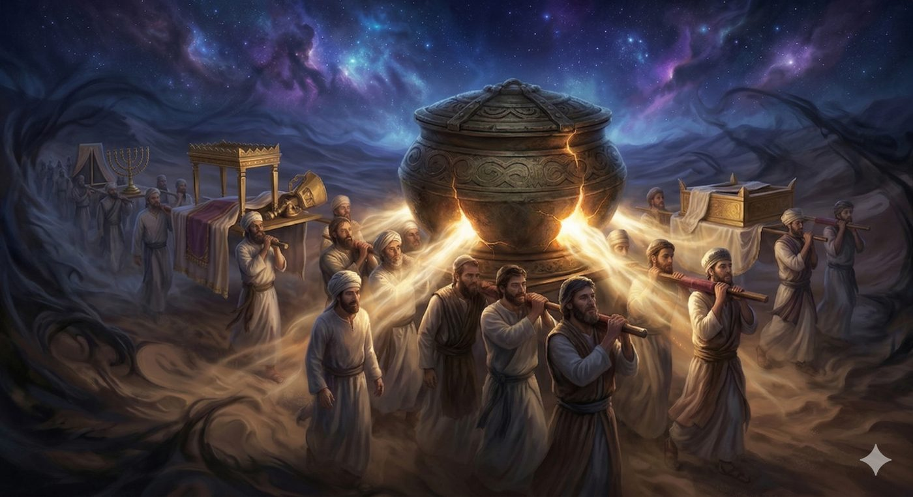
Cependant, dans la perspective de préparation à Pessah, l'image du feu recouvert par le Psachter durant les voyages dans le désert aride devient une allégorie puissante de l'âme juive à travers les millénaires d'exil.
Tout comme l'autel physique a été transporté dans des conditions d'instabilité extrême sans que son feu originel ne soit totalement éteint, la source de la connexion divine survit aux périodes de transition, de persécution et de ténèbres spirituelles. L'âme en exil préserve son "feu perpétuel", souvent dissimulé sous les voiles de la contingence historique ou les habillages du juif chez les nations, mais ce feu ne s'éteint jamais totalement.
La préparation à Pessah consiste précisément à ôter le Psachter, à libérer les braises et à raviver la flamme de la libération originelle du peuple juif.
Le Feu de l’humilité
Pour saisir la radicalité de la purification exigée avant Pessah, il est indispensable de définir le Hametz (levain) et la Matsa non pas uniquement selon leurs propriétés chimiques ou culinaires, mais selon leur essence ontologique et métaphysique.
Le Hametz : L'Épaisseur de l'Ego (Gassout)
Sur le plan Halah’ique formel, il existe des interdictions exceptionnellement strictes concernant le Hametz. Contrairement à la majorité des aliments interdits, la Torah ne se contente pas d'interdire sa consommation : elle prohibe le fait d'en manger, d'en tirer le moindre profit, d'en posséder chez soi, d'en voir dans son domaine, de consommer un mélange en contenant même une infime particule, et décrète l'interdiction stricte de toute consommation dès la mi-journée du quatorze Nissan, la veille de la fête (et selon nos sages deux heures avant la demi-journée).
Au-delà de cette rigueur normative, nos maîtres, et notamment le Maharal de Prague identifient le Hametz à la notion centrale de Gassout, qui se traduit par la grossièreté, l'épaisseur, la densité matérielle ou la pesanteur terrestre. Cette Gassout est le corollaire direct et inévitable de de l'orgueil, désignés sous le terme de Gassout haRouah "l'épaisseur de l'esprit".
Une personne habitée par l'orgueil est considérée comme possédant un "corps épais" (Gouf av). Elle est enfermée dans une structure narcissique qui constitue l'antithèse absolue de l'intellect pur et raffiné (Sehel dak), qui requiert pour sa part la transparence, la fluidité et la réceptivité. Le talmud rappelle d'ailleurs (Sota 5a) que D.ieu déclare à propos de l'homme orgueilleux : « Lui et Moi ne pouvons résider ensemble dans le même monde », car l'ego boursouflé ne laisse aucun espace vacant pour la Présence Divine, explique le Maharal.
Le phénomène naturel de la fermentation du levain illustre physiquement, de manière frappante, l'inflation de l'ego. Le levain s'enfle, prend un volume considérable, envahit l'espace et donne l'illusion de la substance, de l'importance et de la grandeur, sans pour autant modifier d'un gramme la masse réelle de la pâte originelle. La valeur nutritionnelle ne change pas, seule la forme s'est boursouflée.
Cette dynamique d'expansion factice, cette illusion de valeur ajoutée basée sur l'air et le vide, est la définition mystique de l'inclination au mal (Yétser Hara). Le Mégalé Amoukot explique la distinction sémantique et spirituelle entre les deux pains, basée sur l'orientation de la conscience. Le Hametz représente l'illusion d'autonomie de la créature, la croyance orgueilleuse résumée par la formule délétère : « c'est à nous, et nous sommes à nous-mêmes ».
L'homme sous l'emprise du Hametz croit être l'auteur exclusif de sa réussite, de sa richesse et de son intellect, inconscient de la source réélle, la source divine.
La Matsa : Le Pain cuit au Feu de la connaissance Divine (Daat)
La Torah ordonne à l’homme de consommer de la Matza le soir de Pessah (et de ne pas consommer de hametz pendant 7 jours). Sa recette recelle les secrets de fabrication qui permettent d’extirper l’homme de l'opacité spirituelle due à l'enflure du Hametz décrit plus haut et de l’en guérir pour le reste de l’année. En effet, elle est fabriqué dénué de tout agent levant (Seaor) et cuite à la hâte (moins de 18 minutes) sous l'action directe de la chaleur est littéralement née du feu, figeant le temps pour empêcher l'ego de gonfler. Sa planéité et sa dureté symbolisent d’ailleurs un humain qui a réussi l'exploit métaphysique de s'expurger de toute matérialité grossière et de toute prétention narcissique.
Ce passage du gonflement à la sobriété se joue dans la transition entre deux signes calligraphiques presque identiques et réside dans un détail presque imperceptible dont la différence structurelle définit pourtant tout le destin spirituel de l'homme. En effet, une seule lettre diffère entre les mots Hametz (חמץ) et Matsa (מצה).
Graphiquement, le H’et (ח) du Hametz se présente comme une barrière hermétique. Ses trois parois sont soudées, ne laissant aucune issue vers le haut. C’est la lettre de l’enfermement et de l’impasse de l’ego. Dans le monde du Hametz, l'homme est prisonnier de sa propre logique, comme une pâte qui gonfle jusqu'à saturer l'espace, l'orgueil finit par boucher l'horizon. S'il commet une erreur, il s'y cogne sans trouver de sortie. Le mot H’et, qui signifie péché ou faute, partage d'ailleurs cette racine de la fermeture. La faute est, par essence, un circuit fermé : une habitude, une addiction ou une image de soi boursouflée où l'on finit par devenir son propre geôlier dans une prison dont le plafond est scellé.
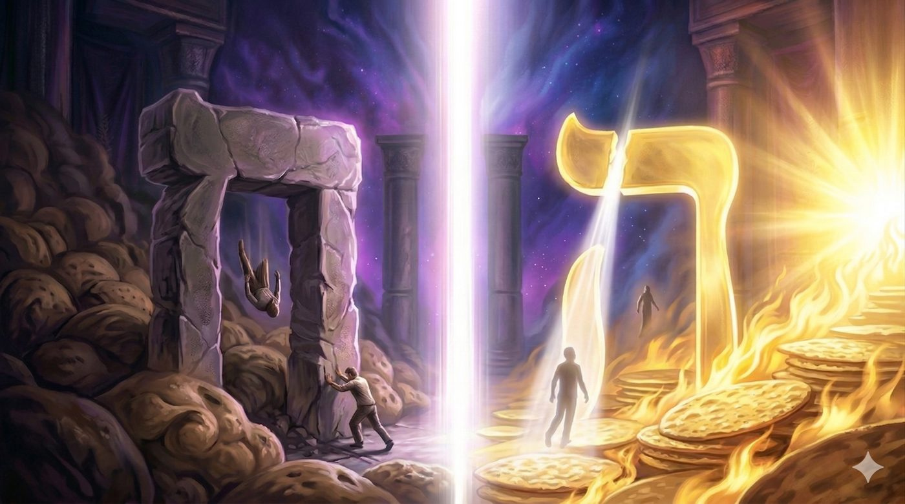
Le passage vers la Matsa introduit alors une infime mais révolutionnaire modification. En détachant la jambe gauche de la lettre du plafond, on crée une minuscule ouverture au sommet : le H’et devient un Hé (ה). Cette porte dérobée change tout, selon le Talmud (Ménah’ot 29b), cette ouverture supérieure est la porte du repentir. Si le bas de la lettre reste largement ouvert, symbolisant la facilité avec laquelle l'homme peut chuter dans les abîmes de la matérialité, le haut offre désormais une issue de secours vers le spirituel. Mais alors que la chute est passive, l'effort de la Téchouva exige une véritable ascension. Pour sortir par cette petite fenêtre du Hé, l'homme doit s'alléger de son propre poids, remettre en question sa pesanteur narcissique et s'affiner. C'est l'essence même de la Matsa : un être qui a réduit son volume pour laisser passer, par cette fêlure, le souffle du divin.
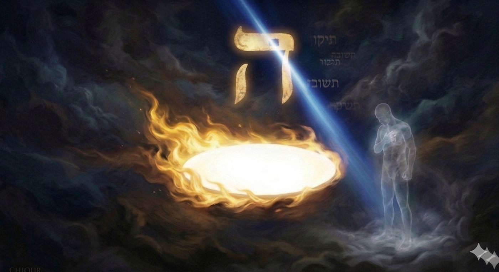
Le Likouté Torah, ouvrage fondamental de la Hassidout Habad, approfondit considérablement cette idée en posant que l'acte rituel de consommer de la Matsa pendant la nuit de Pessah provoque un impact théurgique et cognitif fondamental qui attire la vitalité directement de la source originelle de la parole divine vers l'âme humaine et le monde terrestre. Tandis que le pain matériel ordinaire (le Hametz consommé tout au long de l'année) apporte une vitalité qui nourrit principalement l'âme animal et l'intellect naturel, rationnel et terrestre humain, la Matsa opère sur un registre infiniment supérieur. Appelée dans le Zohar "Pain de la Foi" et "Pain de la Guérison", la Matsa est une nourriture pour l'âme divine.
En mangeant de la Matsa, la personne attire vers le bas la "Connaissance" transcendante (le Daat) nécessaire pour que l'âme divine (Nefesh HaElokit) puisse véritablement percevoir, reconnaître et s'unir à Celui qui a appelé l'univers à l'existence par Sa seule parole. La consommation de la Matsa devient donc une opération spirituelle active d'ingestion de l'humilité qui permet à la conscience humaine de s'annuler devant la transcendance divine, et d’abolir le filtre déformant de l'ego pour retrouver l'état de pureté intellectuelle et spirituelle indispensable à la libération personnelle.
Le Feu de l'Autel
“Vous ne ferez fumer aucun levain (Seor) ni aucun miel (Dvash) comme offrande par le feu à l'Éternel”
L'intersection Halah’ique et allégorique précise entre la parachat Tsav (ainsi que la parachat Vayikra qui la précède) et les lois de Pessah réside dans le statut singulier du Hametz vis-à-vis du rituel quotidien des sacrifices. Le verset énonce de manière catégorique un principe fondamental de l'offrande : « Aucune oblation/Minha que vous présenterez à l'Éternel ne sera faite avec du levain (Hametz), car vous ne ferez fumer aucun levain (Seor) ni aucun miel (Dvash) comme offrande par le feu à l'Éternel » (Vayikra 2:11).
Cette loi, rappelée et amplifiée dans le contexte des oblations de Tsav, exige une explication rationnelle et mystique. Pourquoi le levain, qui améliore considérablement le goût et la texture de la pâte, et le miel, essence même de la douceur naturelle vantée dans la description de la Terre Promise ("où coulent le lait et le miel"), sont-ils irrémédiablement exclus du royaume de la sainteté de l'autel ? s'interroge Isaac Abarbanel.
L'auteur du Toldot Yaakov Yossef apporte une exégèse magistrale et novatrice à cette interdiction, la transposant de la sphère du rituel du Temple au fonctionnement interne du psychisme du savant en Torah et de tout individu engagé dans le service divin. Le service divin par excellence, représenté métaphoriquement par l'offrande consumée sur l'autel, doit être farouchement préservé de deux forces corruptrices psychologiques majeures, incarnées respectivement par le levain (Chaor/Hametz) et le miel (Devash).
Le Levain (L'Orgueil et l'Ostentation) qui symbolise le désir irrépressible de se glorifier, de s'élever socialement et intellectuellement au-dessus de ses pairs, et de rechercher activement des honneurs et des titres de prestige par le biais de sa propre érudition en Torah ou de ses pratiques religieuses. Cet ego qui s'enfle, cette volonté de "faire carrière" dans la spiritualité, est fondamentalement incompatible avec la sainteté divine qui requiert un espace de vide et d'humilité pour s'exprimer.
Le Miel (La Volupté et l'Intérêt Personnel) représente la recherche inlassable de la douceur terrestre, du confort, du profit matériel et du plaisir personnel direct (Hana'ah) qui peuvent être indirectement générés par l'accomplissement des devoirs religieux ou l'acquisition de connaissances sacrées. Étudier ou pratiquer pour le "miel" signifie utiliser la Divinité comme un moyen pour obtenir une jouissance égoïste.
Le commandement d'éliminer le Hametz et de ne jamais l'offrir sur l'autel signifie donc que l'homme doit expulser de manière radicale l'inclination au mal (Yétser Hara) et les motifs inavoués de son étude de la Torah.
Le Paradoxe de la Vache Rousse au Creuset de l'Étude
Toutefois, cette exigence de pureté d'intention absolue soulève une interrogation paradoxale majeure à la lumière d'un adage talmudique célèbre (Pesahim 50b) : « Que l'homme s'occupe toujours de la Torah et des Mitsvot, même si ce n'est pas de manière désintéressée (Shelo Lishma), car de la pratique intéressée (Mitoch shelo lishma) découlera inévitablement la pratique purement désintéressée (Ba lishma) ». Si l'autel refuse catégoriquement tout apport d'ego (levain) et d'intérêt personnel (miel), comment le Talmud peut-il encourager l'étude de la Torah entreprise pour obtenir des honneurs ou des richesses, même comme phase transitoire?
Le Toldot Yaakov Yossef (citant ses propres réflexions sur la Parachat Houkat et les enseignements de ses maîtres) résout ce paradoxe en expliquant le mécanisme complexe de la purification psychologique, en s'appuyant sur l'image vertigineuse de la vache rousse (Para Adouma). Le rituel des cendres de la vache rousse possède une propriété contradictoire unique : il « purifie l'impur, mais rend impur l'homme pur » qui s'occupe de sa préparation, comme l'enseigne le Toldot Yaakov Yossef.
Cette dialectique s'applique avec une précision remarquable au statut spirituel de l'étudiant en Torah. Si un individu est dans un état d'éloignement, d'impureté et de matérialisme, il lui est prescrit de commencer à étudier, même s'il le fait avec des motivations profondément égoïstes et imparfaites (Shelo Lishma, avec une abondante dose de "miel" et de "levain"). Pourquoi? Car pour cet homme "impur", la lumière inhérente contenue dans les lettres de la Torah finira par le raffiner, réformer son caractère et le ramener progressivement vers le bien, la Torah "purifie l'impur". L'étincelle de sainteté contenue dans l'acte surpasse le défaut de l'intention initiale.
En revanche, pour celui qui est déjà avancé dans le cheminement spirituel, qui approche le niveau de perfection intellectuelle et morale, et qui se tient, pour ainsi dire, "sur l'autel" de la sainteté (à l'instar d'Aaron, de ses fils), la dynamique s'inverse. Pour l'homme "pur", la moindre présence persistante de "levain" (d'intention personnelle de se glorifier) ou de "miel" (d'autosatisfaction) dans son étude ne sera pas tolérée. Au contraire, cette trace d'ego viendra corrompre et polluer irrémédiablement l'ensemble de son service divin, car son obligation de pureté est proportionnelle à son élévation, principe exposé par le Toldot Yaakov Yossef et le Ben Porat Yossef. Ainsi sur l'autel, aucune concession n'est faite à l'ego, l'intransigeance de Tsav s'applique dans toute sa rigueur.
Le Feu destructeur
La Kasherisation : Expulser l'Ego par les Braises
Le lien direct entre les lois de la parachat Tsav concernant le nettoyage des récipients ayant absorbé l'essence des sacrifices, et la préparation minutieuse des ustensiles culinaires pour Pessah, est exposé avec une grande finesse dans le Ben Porat Yossef. L'auteur établit une corrélation non seulement physique, mais aussi morale et psychologique stricte concernant la kasherisation (Hagala et Liboun) des récipients. La jurisprudence halakhique, dérivée de l'exposition au feu de l'autel (évoquée explicitement dans la section Tsav), stipule que pour purifier un ustensile en métal afin de pouvoir y cuire la Matsa, il est insuffisant de le passer superficiellement dans une simple flamme (Léhava). La chaleur de surface ne purge pas la profondeur du métal.
Pour extraire le Hametz incrusté, il est impératif que des braises ardentes et incandescentes parcourent et chauffent l'ensemble de la surface de l'ustensile. Le principe tant thermique que spirituel formulé par le Talmud et repris par la Hassidout est d'une symétrie parfaite : « De la même manière qu'il absorbe (par les braises ou l’eau), il recrache/expulse (par les braises ou l’eau) ». Concernant la chaleur au chalumeau, le processus doit être mené jusqu'à ce que des étincelles (Nitsotsot) jaillissent physiquement de la matière purifiée.
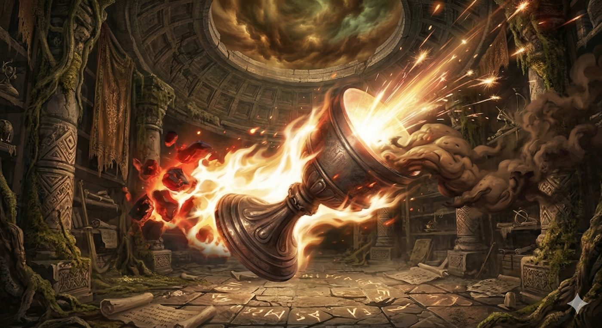
Dans le Moussar (la pensée morale) développée par le Ben Porat Yossef, ce processus métallurgique décrit en réalité une mécanique psychologique de la repentance (Téchouva). L'esprit humain, tout comme l'ustensile de métal, s'imprègne de la matérialité ambiante, des fautes, des pensées interdites, ou de l'orgueil (dérivé du gonflement du levain dans le Hametz) de manière très profonde, souvent sous l'effet d'une chaleur passionnelle, d'un désir brûlant pour la transgression ou la renommée, le mal s'incruste dans les parois de l'âme.
Pour en extirper ces influences toxiques, un simple regret rationnel, une prière tiède, ou des larmes de surface (qui correspondent à la "flamme" superficielle de la Léhava ou à l'eau bouillante de la Hagala) se révèlent souvent insuffisants face à l'ancrage profond de la Gassout. Il est impératif d'appliquer un feu intérieur ardent, un remords brûlant, de la nature même de "l'Ech Tamid" (le feu perpétuel de l'autel), symbolisé par les braises incandescentes capables de forcer l'entité spirituelle à expulser ses résidus putrides de l'intérieur vers l'extérieur. Les étincelles qui en jaillissent représentent la libération de l'énergie vitale autrefois capturée par l'ego, qui retourne enfin à sa source divine purifiée, conclut la morale du Ben Porat Yossef. L'intensité de la purification doit égaler l'intensité de la corruption initiale.
Consumer les Dix Couronnes de l'Impureté
La transition entre la conscience théorique de la nécessité de s'affranchir de l'ego (le Hametz psychologique et intellectuel) et la réalisation effective de cet affranchissement s'opère par la liturgie et l'action physique du Biour Hametz, l'acte solennel de rechercher méticuleusement, d'annuler et de détruire par le feu le levain, à la veille de la fête de la liberté. La Halakha impose deux actes distincts et conjoints pour éliminer valablement le Hametz : l'annulation mentale et verbale (le Bitoul, où le propriétaire déclare avec conviction que tout levain se trouvant en sa possession, qu'il en ait connaissance ou non, devient sans valeur et équivalent à la simple poussière de la terre) et la destruction physique, de préférence par les flammes (la Srefa, la crémation au matin du 14 Nissan).
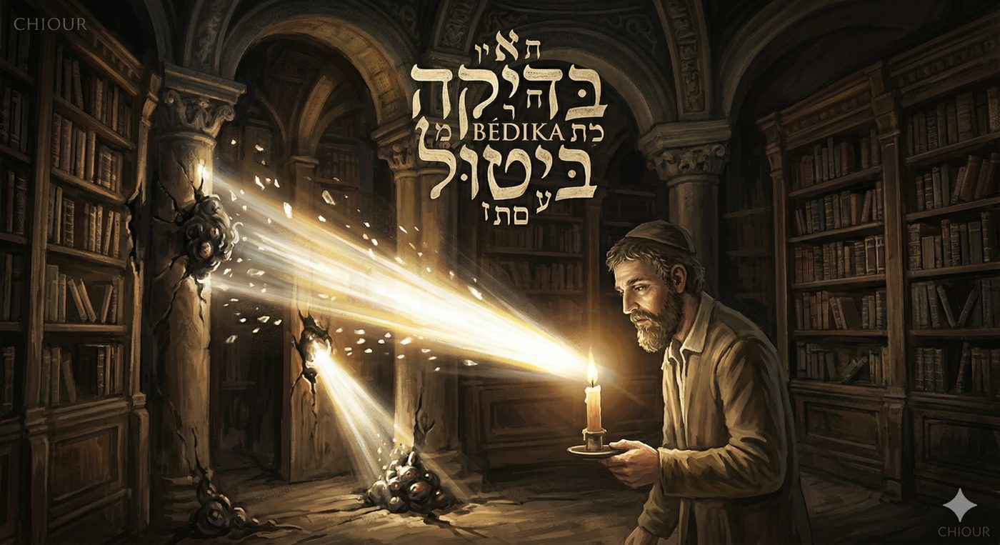
Les élèves du Arizal dans le Pri Etz Haïm (citant leurs maitres) abordent les nombreuses questions Halahiques qui entourent cette mitsva. Puisque la Torah exige que le Hametz ne soit ni vu ni trouvé (Bal Yéraé et Bal Yimatssé), et que le processus d'annulation mentale (Bitoul) suffit théoriquement, selon la loi stricte, à déposséder l'homme de son levain, pourquoi les Sages ont-ils rajouté l'exigence d'une recherche physique minutieuse (Bédika à la lumière d'une bougie) suivie d'une destruction par le feu ?
La justification classique, la peur de consommer accidentellement un aliment dont nous avons l’habitude (Menahot 68a notamment), cache une réalité mystique cosmique et vertigineuse délivré par l'enseignement du Ari z"l. La destruction par le feu de dix morceaux spécifiques de pâte levée cachés dans les pièces de la maison correspond très exactement, sur le plan spirituel, à l'éradication des « dix couronnes de l'impureté »
Il convient d’expliquer cette terminologie. Dans la cartographie des sphères spirituelles, la réalité entre le bien et le mal, est binaire et symétrique (D.ieu a fait l'un en face de l'autre). Tout comme il existe dix attributs de sainteté (depuis Kéter jusqu'à Malkhout) qui canalisent harmonieusement la lumière créatrice divine vers les mondes inférieurs, le monde de la Sitra Ahra (littéralement "l'Autre Côté", qui désigne l'émanation de l'impureté, du chaos, du mal et de la multiplicité séparatiste) est structuré autour d'un système inversé et miroir de dix forces opposées (les Klipot ou écorces). Le Hametz, en tant que substrat matériel de l'ego cosmique, constitue la manifestation tangible de ces dix couronnes impures dans notre réalité physique.
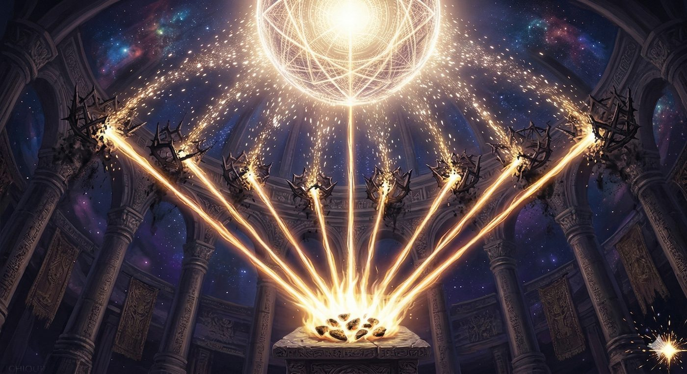
L'acte rituel de les rechercher avec une bougie (symbolisant l'introspection par la lumière de l'âme intellectuelle) puis de les brûler impitoyablement au moyen du feu matériel dans les foyers juifs, active et déclenche l’effacement des forces d'impureté métaphysiques dans les mondes supérieurs. Cette mécanique obéit au principe mystique fondamental de l'Itarouta de-letata, l'éveil d'en bas suscitant inexorablement un éveil d'en haut et un déversement de lumière. L'éradication physique du levain terrestre “oblige” les sphères supérieures à consumer les entités parasitaires du mal cosmique, précise le Pri Etz Haïm.
A ce propos, la Hassidout (et notamment) le Sfat Emet précise que la véritable destruction du Hametz est une combustion interne intense, c'est par le feu d'un cœur brûlant de dévotion pour le Créateur que l'on parvient à consumer toutes les pensées étrangères et les scories de l'ego du hametz qui encombrent l'esprit, donnant ainsi tout son sens à l'obligation de détruire le levain par le feu.
Réhabiliter le Hametz
Pour autant, en réalité, rien n'est intrinsèquement négatif et chaque parcelle de l'existence participe à la révélation de l'Unité. En ce sens, le hametz et le seor (le levain), bien qu'ils campent des forces de rigueur qui font sombrer dans l'ego, ne sont pas des entités autonomes mais bien des développements complexes du nom divin Elokim codifié par les mâitres de la mystique juive.
Ce nom, qui préside aux forces de la nature et à la mesure du monde, permet à la création d’exister dans sa densité apparente. Si nous recevons l'ordre de brûler momentanément ces forces au matin de Pessah, il ne s'agit pas d'une éradication de la matière, mais d'une phase d'aseptisation ordonnée par D.ieu et strictement limitée dans le temps. C'est une mise en retrait volontaire de la force d'expansion pour laisser place à la lumière de la délivrance.
Cette rigueur du nettoyage n'est ainsi qu'une étape préparatoire. À Pessah, alors que nous sortons de l'étroitesse de l'Égypte, le mélange entre le bien et le mal est encore trop intime pour que nous puissions trier nos pulsions. Le hametz est alors une force sauvage que l'on ne maîtrise pas, et l'humilité de la matza devient notre seul refuge. Pourtant, le projet divin n'est pas de nous maintenir dans cet effacement. À travers le compte de l'Omer, qui démarre au lendemain de Pessah, nous procédons à la rectification patiente et méthodique de la nature.
Le but ultime se dévoile à Chavouot, lors du don de la Torah, quand nous sommes enfin prêts à assumer la charge de notre propre force de croissance. C'est là que le paradoxe s'accomplit : le hametz, hier proscrit, devient l'offrande centrale de Chavouot, celui des deux pains de proposition, qui validera les nouvelles recoltes de blé utilisées pour les offrandes d’oblation de farine de blé (menah’ot) de l’année à venir (Talmud - Menahot 68-69).
Cette transition marque le passage de la crainte, qui s'exprime par l'évitement et la destruction du levain, à l'amour, qui s'exprime par son intégration au sacré. En brûlant le hametz à Nissan, nous préparerons la semence de la joie de Sivan. Le levain n'était pas un ennemi, mais une puissance de vie en attente de sa propre sanctification.
Une fois l'ego domestiqué par la Torah, le gonflement du moi se transforme en une noble ambition au service du Ciel. Le vide laissé par le feu de Pessah devient ainsi le réceptacle nécessaire où la plénitude du levain pourra, à Chavouot, s'épanouir sans danger et révéler que même dans la densité de la nature, et le mal apparent, Dieu est présent.
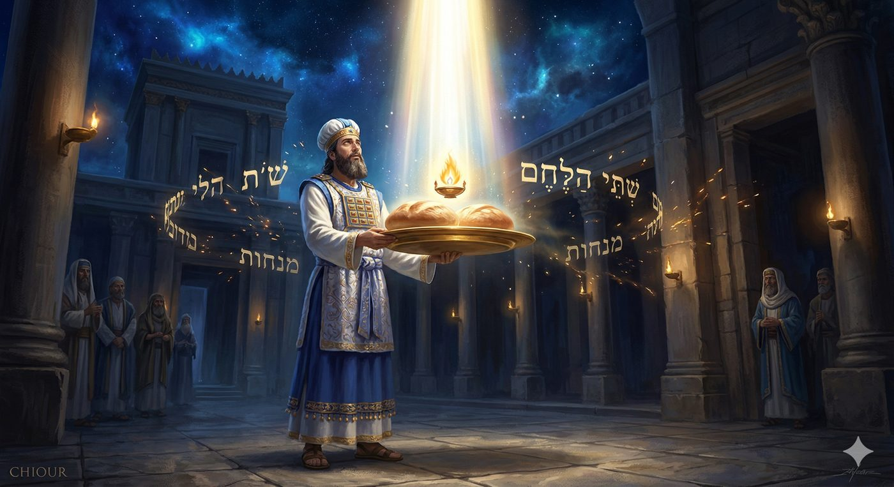
Conclusion et Synthèse du Chiour
Du Feu de l'Exode au Feu de la Délivrance Ultime
L'analyse de la corrélation profond entre les thèmes du feu de la parachat Tsav (le feu continuel de l'autel, l'interdiction du levain dans les oblations, la purification des ustensiles) et la structure conceptuelle du feu durant la fête de Pessah (la Matsa théurgique, le Biour Hametz destructeur des klipot ) à travers le prisme de la mystique juive et du hassidisme, révèle une cohérence éblouissante inépuisable.
Premièrement, il s'avère que l'injonction biblique sévère (Tsav) qui exige le zèle absolu et le refus du confort trouve son application la plus immédiate et pressante dans le combat quotidien contre l'inertie de l'âme humaine. L'autel de pierre ou d'airain du mishkan trouve son homologue parfait et son lieu de relève dans le cœur palpitant de l'homme. C'est là, dans cette intériorité sanctifiée, que doit brûler un feu perpétuel et inextinguible, l'Ech Tamid. La fonction cardinale de ce feu intérieur est de raffiner la conscience, d'empêcher le refroidissement cynique causé par l'exil, et d'expulser sans ménagement toute forme d'orgueil, d'ego, et d'intérêt personnel, désignés allégoriquement par la Torah sous les traits du gonflement du levain (Hametz) et de la douceur compromettante du plaisir purement hédoniste (Devash, miel).
Deuxièmement, la Matsa n'est pas réductible à un symbole passif ou à un artefact commémoratif rappelant au souvenir une fuite précipitée hors des frontières égyptiennes. Elle constitue un véritable outil spirituel, un "Pain de la Foi / de la guérison", qui permet l'absorption directe de la connaissance divine (Daat). L'acte d'ingérer ce pain vierge de toute fermentation aligne instantanément l'âme intellectuelle et l'âme divine, en contournant et en neutralisant les interférences parasites de l'inclination au mal.
Troisièmement, le rituel Halah’ique rigide entourant l'annihilation du Hametz, allant de la recherche au crépuscule (Bédika), en passant par l'annulation verbale dé-possédante (Bitoul), pour aboutir à la crémation purificatrice (Biour / Sréfa) par l'action de braises ardentes qui arrachent les fautes jusque dans l'épaisseur des ustensiles, possède une incidence mystique littéralement cosmique. La crémation terrestre de dix fragments de levain déclenche la désintégration des dix couronnes de l'impureté, opération nécessaire à la re-appropriation du Hametz à la sortie de Pessah, jusqu’à son consécration ultime lors de la fête de Chavouot, par l’apport des pains de propositions au Temple.
Finalement, cette transmutation extrêmement exigeante de l'individu, vidée de sa grossièreté/Gassout par le feu de la Techouva, débouche sur la finalité ultime du projet divin : la constitution d'une entité collective saine, solidaire et dévouée (Klal ou Tzibour) à l'accueil de la présence divine. Ce n'est qu'en abandonnant l'ego boursouflé (qui conduit à l'ostracisme) imposé par le Hametz et en épousant intimement la modestie fluide de la Matsa autour d’un seder fraternel et familiale que les consciences individuelles peuvent s'assembler, réparer la brèche cosmique originelle, et devenir le temple vivant apte à fixer la Présence Divine, la Sheh’ina, dans le concret de l'histoire humaine.
En cette veille de Chabbat HaGadol 5786, alors que nous nous apprêtons à consumer physiquement les derniers vestiges de notre levain, rappelons-nous que chaque étincelle qui s'élève de nos foyers est un écho du feu perpétuel de l'autel. En brûlant le Hametz, nous ne faisons pas que nettoyer une demeure, nous préparons le sanctuaire de notre conscience à devenir le réceptacle de la Présence Divine.
Car, le feu perpétuel de l'autel de Tsav n’est nullement resté enfoui dans les sables des déserts du Sinaï, il préside silencieusement au processus de libération métaphysique qui embrase le cœur d'Israël à chaque printemps, à la veille de Pessah pour bruler nos ustentiles et amoindrir les forces spirituelles négatives. C’est à ce titre qu’il n'est que la préparation à l'embrasement final de la Rédemption. Comme l'enseigne le Maharal dans son ouvrage Ohr Hadach, si la sortie d'Égypte fut la première délivrance forgeant la nation dans le feu, la délivrance ultime (Geoula Aharona), bien qu'elle doive être menée par le Machiah, sera fondamentalement et directement l'œuvre de l'Essence divine elle-même.
Yehi Ratson, puisse être la Volonté du ciel,
Que ce feu de la vigilance et de l'humilité, brise l'épaisseur de nos exils et hâte le moment où l'unité retrouvée d'Israël ne sera plus protégée par des murailles physiques ou technologiques, mais par la splendeur même du Créateur.
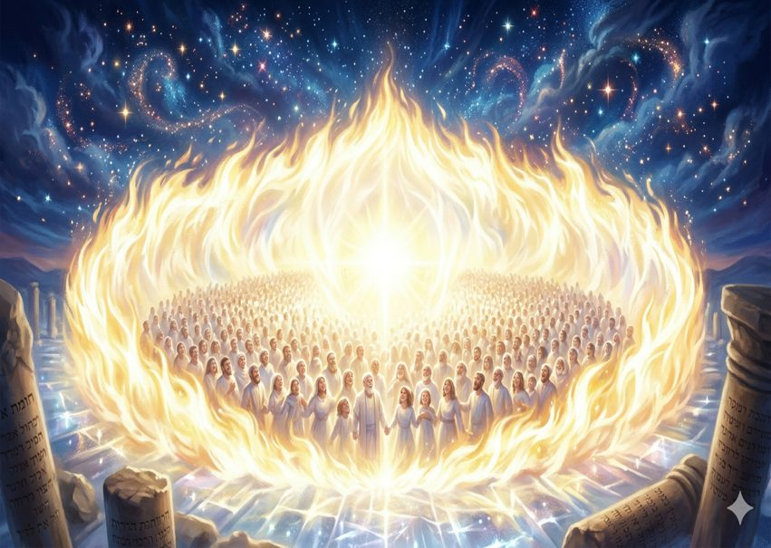
Que la prophétie de Zeharia s’accomplisse
וַאֲנִי אֶהְיֶה־לָּהּ נְאֻם־הֹ’ חוֹמַת אֵשׁ סָבִיב וּלְכָבוֹד אֶהְיֶה בְתוֹכָה
"Et Moi, Je serai pour elle, Dit l'Éternel, une muraille de feu tout autour, et Je serai sa gloire au milieu d'elle." (Zeharia 2,9)
Chabat Chalom Hagadol et Pessah Cacher VéSaméa'h !
Rédigé par B.A le 4 Nissan 5768 à Saint Mandé
Annexe : Le Feu de l’unité
La dimension intime et individuelle de la purification du Hametz possède, par effet de résonance, une dimension sociale et nationale que les maîtres explorent profondément. La sortie d'Égypte et la formation de la nation, agrégées autour de la législation complexe des sacrifices (soigneusement définie dans les parachiotes Vayikra et Tsav), opèrent le basculement crucial d'une myriade de consciences individuelles et fragmentées vers la constitution d'une conscience unifiée, un corps collectif organique désigné sous les termes de Klal ou Tzibour.
Éteindre la Particularité Égoïste pour accueillir la Shehina
Dans plusieurs de ses écrits (notamment dans Tiferet Yisrael et Ner Mitsv), le Maharal de Prague établit fermement un principe théologique fondamental : la Présence Divine (Shehina) refuse catégoriquement de lier son nom, dans sa dimension pleine, infinie et absolue, à des individus isolés, quels que soient leurs mérites, ou à des détails fragmentaires et atomisés de l'existence (Prati). La Sheh’ina se révèle exclusivement à une entité organique et solidaire, une nation complète constituant une unité indivisible. C’est l'union harmonieuse d'Israël qui forme le réceptacle, la matrice apte à abriter le Divin dans les confins de l'histoire. Cette notion métaphysique trouve un écho retentissant dans la déclaration du traité talmudique Meguila (29a), qui rappelle avec assurance que la Shehina a accompagné le peuple d'Israël, dans sa dimension collective, à travers tous ses exils successifs (en Égypte, à Babylone, en Perse, et dans l'exil de Rome, le nôtre).
L'éradication du Hametz, qui survient avant la célébration de la constitution de ce collectif national, revêt dès lors un aspect social et éthique déterminant. L'orgueil, la prétention d'indépendance, et l'arrogance intellectuelle ou financière (la Gassout inhérente au Hametz) agissent comme des agents d'isolement social. L'ego enferme inexorablement l'individu dans la prison de sa particularité intéressée, le poussant à la compétition féroce, et par conséquent, le sépare métaphysiquement du reste de la communauté (Tzibour), déchirant ainsi le tissu par lequel D.ieu Se manifeste.
En contraste absolu, la Matsa, dont la surface lisse est cuite sans délai, dont les bords refusent de s'élever, maintient l'égalité structurelle, symbolise l'humilité radicale. Cette modestie est la condition sine qua non pour pouvoir se fondre sans friction et faire partie intégrante du corps mystique d'Israël. C'est en annihilant le "je" boursouflé que l'individu permet au "nous" sacré de voir le jour, formant la condition préalable à toute révélation véritable (comme celle qui aura lieu quelques semaines après Pessah, au Mont Sinaï, où le peuple campa « comme un seul homme avec un seul cœur »).
Contrairement aux autres sacrifices qui peuvent être apportés à titre individuel pour expier une faute personnelle ou exprimer une gratitude privée, le Korban Pessah est intrinsèquement familial et collectif. Personne ne mange seul, L'individu s'efface au profit du groupe, et le groupe lui-même s'efface au profit de la nation. C'est ici que la symbolique de la Matsa rejoint celle de l'agneau : la Matsa est le pain de l'annulation de l'ego, et l'agneau est la viande de l'union fraternelle.
L'Interdiction de Briser les Os : L'Indivisibilité du Corps National
Une loi frappante du Korban Pessah renforce cette idée : « Vous n'en briserez aucun os » (Chemot 12,46). Briser un os, c'est créer une fracture, une séparation, une brèche dans l'unité du peuple. Pour que la Shekhina puisse résider dans le camp d'Israël, ce dernier doit être "entier". Tout comme la Matsa ne doit pas lever pour ne pas créer d'alvéoles d'air (de vide et de séparation) dans la pâte, l'agneau de Pessah ne doit pas être fragmenté. On ne peut pas "diviser" Israël en entités autonomes, on ne peut que le vivre comme un tout indivisible.
Cette dynamique atteint son paroxysme lors de la nuit du Séder. Le mot Séder signifie "Ordre". Cet ordre n'est pas seulement liturgique, il est cosmologique. Il s'agit de remettre chaque étincelle à sa place au sein du grand ensemble. Le Hametz est l'élément qui "sort de l'ordre" par son enflure. La Matsa et le Korban sont les éléments qui "rentrent dans l'ordre" par leur soumission au Tout.
Comme le précise le Toldot Yaakov Yossef, la sortie d'Égypte était ne extraction de la "singularité égoïste" pour entrer dans la "communion divine". C'est pourquoi le texte de la Haggadah commence par : « Que tout celui qui a faim vienne et mange », que la Halah’a insiste autant au démarrage sur la nécessité de s’assurer que chacun dispose de matsot. L'invitation à l'autre est la preuve ultime que le Hametz (l'égoïsme) a été vaincu.
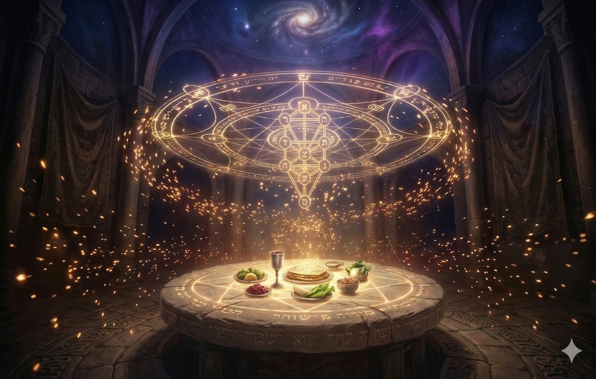
|
📚 Sources TorahVayikra - Lévitique 6, en particulier les versets sur « Ola » et « Ech tamid toukad al hamizbéaḥ lo tikhbé »PsaumesTéhilim 126,2 « Alors notre bouche se remplira de rire ».Téhilim 100,2 « Servez l’Éternel avec joie ».ProphètesZacharie, un passage évoquant la protection d’Israël par la « splendeur du Créateur » est cité allusivement en conclusion.Talmud BavliBerakhot 31a (interdiction de remplir sa bouche d’un rire total en ce monde)Sotah 5a (sur l’orgueil, « Lui et Moi ne pouvons résider ensemble »)Menahot 29b (lecture des lettres Hé/Hèt comme portes de la faute et de la téchouva)Menahot 68a (peur de consommer par habitude un aliment, dans le contexte de Biour Ḥamets).Traité Pessahim (50b) : Sur l'évolution pédagogique consistant à étudier ou pratiquer initialement de manière intéressée (Shelo Lishma) pour pouvoir atteindre ultimement le désintéressement absolu (Lishma).Traité Meguila (29a) : Affirmant de manière consolatrice que la Présence Divine a toujours accompagné le peuple d'Israël en tant que collectif dans tous ses exilsTalmud YeroushalmiYoma 21b (discussion sur la perpétuité du feu de l’autel pendant les déplacements du Michkan).Auteurs et œuvres mystiquesEnseignements du Ari zal (Rabbi Itsḥak Louria), notamment via le traité Pri Etz Ḥaïm, sur le Biour Ḥamets, les dix couronnes d’impureté et la structure symétrique des dix sefirot de qedoucha et des dix klipot.Pri Etz Ḥaïm sur Pessaḥ et Biour Ḥamets, concernant la recherche à la bougie, la destruction par le feu et les « Youd Ketrin de-mesavouta ».
|
 Plan du Chiour
Plan du ChiourDeutéronome (Devarim), au chapitre 3, verset 28 : וְצַו אֶת־יְהוֹשֻׁעַ וְחַזְּקֵהוּ וְאַמְּצֵהוּ כִּי־הוּא יַעֲבֹר לִפְנֵי הָעָם הַזֶּה וְהוּא יַנְחִיל אוֹתָם אֶת־הָאָרֶץ אֲשֶׁר תִּרְאֶה׃ "Donne des ordres à Josué, fortifie-le et affermis-le ; car c'est lui qui doit passer à la tête de ce peuple, et c'est lui qui les mettra en possession du pays que tu vas voir."↩︎
Le mot vient du grec psaktēr. Dans le contexte du Yerushalmi, il s'agit d'un couvercle massif.↩︎